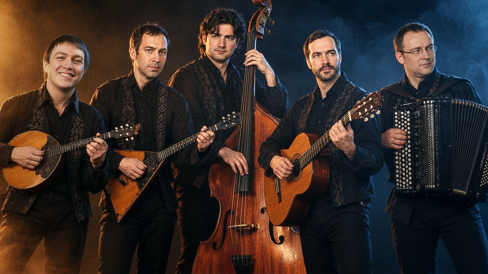

О нас
Мы — творческий коллектив единомышленников. Нас объединяет стиль и любовь к музыке.
Каждая наша песня — это отдельная история. История, которая произошла с кем-то из нас. Или с кем-то другим — но мы её услышали, пропустили через себя и рассказали в музыке.
Мы не пишем песни на заказ. Но мы можем создать для вас уникальное музыкальное посвящение — если ваша история отзовётся в нас так же сильно, как отозвалась бы наша собственная.
Почему мы работаем удалённо. Наша команда работает удалённо. Не потому, что мы что-то скрываем — а потому, что участники живут в разных городах и даже странах: Санкт-Петербург, Москва, Новосибирск, Казань, Минск, Лондон. Нас разделяют тысячи километров, но объединяет одно: музыка. Именно по этой причине мы пока не даём концертов. Но это не мешает нам создавать то, что трогает сердца.
О личном. Всю необходимую информацию о нас мы дали. Всё остальное — личная жизнь, которая не подлежит комментариям.
Почему REDEMPTATION
Изначально проект должен был называться просто Redemption — «Искупление». Это слово точно отражало суть: путь от падения к возрождению, от боли к свету.
Но когда к проекту присоединился Michael Matthew — наш вокалист из Лондона — он предложил другое имя. Он соединил два слова: Redemption (Искупление) и Temptation (Искушение).
Так родилось REDEMPTATION — неологизм, в котором живут обе силы: свет и тьма, выбор и соблазн, падение и восстание. Это имя точнее отражает то, о чём мы поём.
Название предложил Майкл. Мы приняли его единогласно.
Альбом «Redemption» (2026)
Шестнадцать треков. Шестнадцать историй.
Слушайте превью. Полные версии — на Boosty.
Цифровой альбом: MP3+PDF — 1500 ₽, FLAC+WAV+PDF — 2500 ₽.
Приобрести на Boosty
Примеры музыкальных посвящений: «Анжела», «Тамара», «Together», «KARDASH».
Эти треки — посвящения реальным людям. Они вошли в альбом с разрешения заказчиков.
Послушайте. Возможно, вы захотите такое же.
REDEMPTATION
Основной состав. Восемь музыкантов. Одна история.
Анжела — Хранитель смысла
Анжела — арт-директор REDEMPTATION. Она видит, слышит, решает. Её чувство чувство стиля и понимание глубины текста — компас проекта. Если песня не трогает её сердце — она не трогает никого. Без её одобрения не выходит ни один релиз.
Песня «Анжела» посвящена ей. И это — самая личная песня проекта. Больше мы ничего не скажем. Это наша семья. Это наше право.
Экспромт-квинтет
Партнёрский проект. Акустические инструменты. Живое звучание.
Мы сотрудничаем с акустическим ансамблем «Экспромт-квинтет». Это отдельный коллектив, не входящий в основной состав REDEMPTATION. Вместе мы записали несколько инструментальных композиций, и в планах — больше совместных работ.
Домра. Балалайка. Баян. Контрабас. Гитара. Акустические инструменты заставляют вибрировать Душу, электро — тело. Когда вы слышите их вместе — вопросов не остаётся.

Музыкальное посвящение
Мы создаём музыкальные посвящения. Это не «песня на заказ» — это музыка, в которой живёт чья-то судьба.
Чтобы написать такое, мы должны прожить вашу историю. Пропустить её через себя. Только тогда рождается то, что трогает душу.
Мы работаем только в своём стиле. Если вы ищете точную копию другого исполнителя — мы, скорее всего, не сможем помочь.
Стоимость и условия обсуждаются индивидуально.
Обсудить проект
Расскажите свою историю
Мы создаём музыкальные посвящения. Не «песни на заказ» — а музыку, в которой живёт чья-то судьба.
Чтобы написать такое, мы должны прожить вашу историю. Пропустить её через себя. Только тогда рождается то, что трогает душу.
Мы не берёмся за каждую историю. Не потому, что выбираем «достойных» — а потому, что не можем работать без отклика. Если история не отзовётся в нас, мы не сможем создать то, что отзовётся в вас.
Если вы хотите посвящение — напишите нам. Расскажите свою историю.
Мы прочитаем. Мы ответим каждому. Если почувствуем, что это наше — скажем «да». Если нет — честно скажем об этом. Без обид. Без недомолвок.
Мы работаем в своём темпе. Не гонимся за сроками в ущерб качеству. Если вы готовы ждать — мы будем рады. Если вам нужно «завтра» — мы, скорее всего, не сможем помочь. Но честно скажем об этом сразу.
Написать
В REDEMPTATION нет случайных лиц. Каждый участник — реальный человек. Но не каждый может или хочет показывать себя. Некоторые используют аватары — по личным причинам. Мы уважаем их выбор. Это не маска — это дверь в мир, которую мы просто открыли.